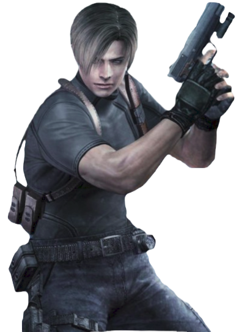
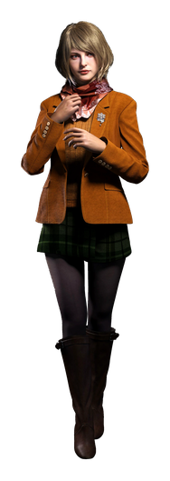

Leon S. Kennedy
27歲，曾經在 Raccoon City 經歷過大風大浪的 Leon， 在六年過後，已經是美國的情報幹員， 而且預定要擔任美國總統及其家人的貼身護衛。 不料卻傳出總統的女兒 Ashley 被綁架， 因此 Leon 便前往歐洲展開搭救 Ashley 的行動。

Ada Wong
32歲，在六年前出現在 Leon 面前， 和 Umbrella 息息相關的華裔女子。 在之前為了 G 病毒和男友 John 為目的的她， 如今又是為何再次出現在 Leon 面前呢？

Ashley Graham
20歲，美國總統的女兒， 是一個就讀麻塞諸塞州的大學的大學生， 個性活潑開朗。 因為父親身分的關係，被不明的組織團體鎖定， 在放學回家的途中遭到綁架。

Jack Krauser
傭兵，從他臉上身上的傷痕可以看出實戰經驗豐富， 戰鬥技巧很好。 他在兩年前突然失去消息， 兩年後卻出現在村落裡與老友 Leon 為敵， 跟 Ada 似乎也有某些關聯。

Luis Sera
28歲，原本在歐洲為光明教導團工作， 卻不知什麼原因被教團囚禁起來， 也許是跟他研究的嗜好有關？

Bitores Mendez
村落的村長，原為光明教導團的傳教士、Saddler 的手下。 因為左眼是義眼的關係， 所以才有右眼是藍色、左眼是紅色不同的瞳孔顏色， 擁有超乎常人的力量。

Ingrid Hunnigan
和 Leon 同為美國的幹員， 這次負責協助 Leon 的任務， 她會透過無線電給予有用的情報。

武器商人
以軍火販子的身分到處遊走做著危險的交易。 遊戲中可以經由交易拿到有用的道具或武器， 有時還會提供一些獎勵給玩家。

Ramon Salazar
20歲，村落古城的第八代城主， 是光明教導團虔誠的信徒， 給予教導團相當多的資金協助並幫忙守衛。 矮小的身形常讓人猜不到他的年紀。

Osmund Saddler
光明教導團的教主， 擁有對村落強大的影響力， 對於「疫生獸」有諸多瞭解， 內心籌畫著可怕的陰謀， 而他隨身帶的手杖好像有什麼玄機的樣子……